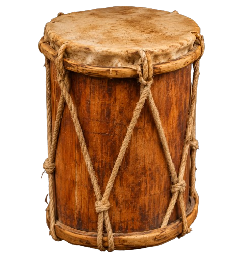

Saltar al contenido
Hora de tocar
Conozcamos Tabasco
Hora de tocar
Elige un instrumento y descubre sus ritmos y formas de ejecución.
Flauta de carrizo
Aprender a tocar

Tambor tradicional
Aprender a tocar